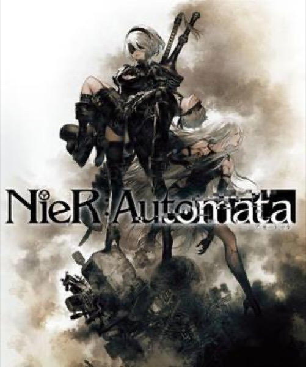

RPG · 2017
NieR: Automata
Genre-shifting combat wrapped around philosophy and multiple endings.

Cover: Wikipedia: Nier: Automata
Facts
- Released
- 2017-02-23
- Genre
- Action RPG
- Category
- RPG
- Platforms
- Nintendo, PC, PlayStation, Xbox
- Developers
- PlatinumGames
- Publishers
- Square Enix
PC requirements
- Minimum
- [object Object]
- Recommended
- [object Object]